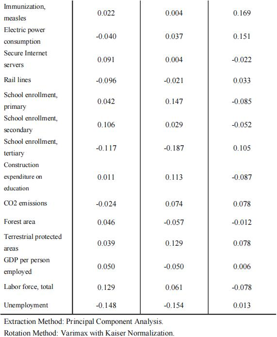
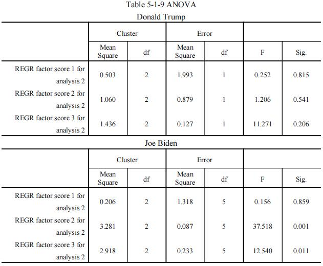

A System to Evaluate the Impact of Candidate policies on the Economy
Abstract
- The election of different candidates will shape different strategic patterns of global economic and financial development, and have a greater impact on the U.S. economy and the global economy (including China’s economy). In order to explore how different policies will affect the economy of the United States and China, we have established a system to evaluate the impact of candidate policies on the economy.
- In task 1, in order to find out the impact of different candidates on the U.S. economy, we establish an economic evaluation model based on cluster regression. First of all, we analyze the topic, select GDP as an indicator to measure the U.S. economy, and select 24 factors that affect the U.S. economy according to the economic evaluation system of the world bank. Secondly, we use the principal component analysis method to reduce the dimension of 24 sub factors, and get three principal component factors, and then use cluster analysis to verify that the correlation between the principal component factors is small; finally, we take the U.S. GDP as the explanatory variable and the three principal component factors as the explanatory variables to establish a multiple linear regression equation(see formula 5-1-5, 5-1-6). And we got the possible impact of different candidates elected on the U.S. economy.
- In task 2,in order to find out the impact of different candidates on China's economy, we improve the economic evaluation model based on cluster regression. First of all, we use the model of question 1 to eliminate irrelevant index factors and find out the factors that have an impact on China's GDP. Secondly, we take China's GDP as the explanatory variable and the selected factors as the explanatory variable to establish a multiple linear regression equation(see formula 5-2-4, 5-2-5). And we got the possible impact of different candidates elected on China’s economy.
- In task 3,we set up the analytic hierarchy process (AHP) optimization model, which integrates multiple methods through stacking, and can also simply weight and take the mean value. After that, we put the indicators of the two candidates' successful election into the comprehensive evaluation system. Finally, we quantified China's response measures as the disturbance of the indicators through emotional quantification. Finally, we optimize China's response measures according to the impact relationship and the main indicators of the impact of question 2 on China's economy, and based on the principle of the most conducive to the country's long-term development, we put forward practical suggestions on China's economic countermeasures and policies in relevant fields.
1 Restatement of the problem
1.1 Problem Background
- 2020 is the year of US presidential election, with Republican candidate Donald Trump and Democratic counterpart Joe Biden running for president. The candidates of both parties have different political stands and administrative programs in finance and trade, economic and financial governance, and some other different key development areas (such as COVID-19 fighting measures, infrastructure, taxation, environmental protection, medical insurance, employment, trade, immigration, education, etc.). The election of different candidates will shape different strategic patterns of global economic and financial development, and have a greater impact on the U.S. economy and the global economy (including China’s economy)
1.2 Our Efforts
- Different policies can affect America’s economy and China’s economy. Our team is asked to collect the candidate’s policy propositions, policy guidelines and relevant data in different fields, and answer the following questions:
- 1.Establish a mathematical model and use relevant data to quantitatively analyze the possible impact of different candidates elected on the U.S. economy.
- 2.Establish a mathematical model and use relevant data to quantitatively analyze the possible impact of different candidates elected on China’s economy.
- 3.Suppose you were members of China’s Think Tank for Economic Development, combined with the mathematical models of questions 1 and 2, what suggestions would you make to China’s economic countermeasures and policies in related areas in both cases (which party wins)? Please illustrate your points specifically.
2 Problem analysis
- The first problem is regression analysis and evaluation, which requires a quantitative analysis of the possible impact of different candidates on the U.S. economy. To solve this problem, we use factor analysis algorithm and factor clustering algorithm to establish principal component analysis model. First of all, the total GDP of the United States measures the U.S. economy, standardizes and brings in 12 indicators, such as infrastructure, tax and environmental protection, which may have an impact on the U.S. economy during the term of office of different candidates. Through factor analysis, the matrix rotation and ANOVA test are carried out, and the irrelevant index factors are eliminated and the dimensions of the indicators are reduced. Then, we use k-means analysis method to find out the relationship between the three factors and the GDP of the United States, and then get the influence relationship of each index on GDP. Through the quantitative analysis of the policies of different leaders through the analytic hierarchy process, we can get the influence relationship of different leaders' strategic models on GDP. Finally, the sensitivity of the model is tested. The results show that the state or output changes of the model are less sensitive to the changes of system parameters or independent conditions, and the results are convincing.
- The second problem is regression analysis and evaluation. In view of the second question, based on the model of question one, we take China's GDP as an indicator to measure China's economy, and standardize the influence indicators such as import and export of goods and tariffs that affect China's GDP into the principal component analysis model. Then, through factor analysis and rapid clustering, the expressions of different indicators and GDP are obtained, and the influence relationship of different strategic models of leadership on China's GDP is obtained by using AHP. Finally, the sensitivity test shows that the model is stable and the error is within the standard range.
- The third problem is decision-making suggestion. In view of the third question, we have established the analytic hierarchy process (AHP) optimization model. China's response measures can be regarded as a disturbance to these indicators. According to the relationship between the first two questions and the main indicators of the second question's impact on China's economy, we optimize China's countermeasures and policies in relevant fields based on the principle of the most conducive to the long-term development of Chinese parents and other practical suggestions.
3 Assumptions and Justification
- 1.It is assumed that the references and conclusions cited in this paper are correct and reliable.
- 2.It is assumed that the index data searched in this paper is true and reliable, and the sample data can reflect the specific situation.
- 3.It is assumed that the original observation indexes of the model can be replaced by new factors.
- 4.It is assumed that the original observation indexes of the model can be replaced by new factors.
- 5.It is assumed that if the value of an indicator has a small impact on the economic indicators, the impact will be ignored.
4 Notations
5 Framework
5.1 Task 1
- In order to find out the impact of different candidates on the U.S. economy, we establish an economic evaluation model based on cluster regression. First of all, we choose the indicators to measure the U.S. economy, and according to the economic evaluation system of the world bank, we select the factors that affect the U.S. economy. Secondly, we use principal component analysis to reduce the dimensions of the sub factors, and then use cluster analysis to verify that the correlation between the principal components is small. Finally, we will measure the indicators of the U.S. economy as the explanatory variables, the principal component factors as the explanatory variables, establish a multiple linear regression equation, and then conduct qualitative analysis to find out the impact of different policy factors on the U.S. economy, and further analyze the impact of different candidates on the U.S. economy. The analysis process of influencing factors of US economy based on cluster analysis is shown in figure 5-1-1.
- 5.1.1 Primary indicator system of U.S. economy based on Cluster Analysis
- （1） Cluster Analysis
- Cluster analysis is one of the commonly used methods to solve the problem of subdivision of economic influencing factors. It is a classification method based on the characteristics of things. The principle of cluster analysis is that the individuals of the same class have great similarity among the sub classes after division, and the individuals without class have obvious differences.In this study, using the method of cluster analysis to study the main factors affecting the U.S. economy is not necessary to draw up the classification criteria in advance, and human factors will not interfere in the process of clustering. This method can ensure the comprehensive analysis of each attribute from the perspective of preprocessed sample data, and the final classification results can fully reflect the characteristics and differences of various factors.
- Step1:Extraction of original variables
- Because GDP is the decisive factor to measure a country's economic development, we choose GDP as the indicator to measure the economy, that is, GDP as the explanatory variable.
- According to the problems, the main factors affecting the U.S. economy are selected as the original variables of cluster analysis, and the types of variables and storage types are defined.

- Where
- `x_i`—Merchandise exports, Merchandise imports, Merchandise trade, Net barter terms of trade index, High-technology exports, Tax revenue, Birth rate, Death rate, Life expectancy at birth, Mortality rate, Immunization(measles), Electric power consumption, Secure Internet servers, Rail lines, School enrollment(primary), School enrollment(secondary), School enrollment(tertiary), Construction expenditure on education, CO2 emissions, Forest area, Terrestrial protected areas, GDP per person employed, Labor force(total), Unemployment.
- Step2:Dimension reduction of original variables
- In order to fully understand the information of things, most researchers tend to make a large number of observations on many attribute factors related to things, and collect a large number of data through statistical analysis to explore the law of the object. Many variables and large samples can show the comprehensive and rich information of the target things to a great extent, but the correlation between variables will cause great interference to the analysis of the problem. On the contrary, it is easy to fall into the misunderstanding of limitation if we analyze each variable separately, and we can't grasp the characteristics of the target thing as a whole, which is very easy to draw a limited and biased conclusion.
- Therefore, it is necessary to find a way to reduce the number of original variables and retain the information contained in the original variables as much as possible. This paper uses the method of dimension reduction to select representative variables. Factor analysis is a common method of dimensionality reduction. It can accurately find the potential factors which can not be obtained by direct observation but have a certain dominating effect on the changes of observable variables in the variables with correlation. If the variables with high correlation are expressed by the same factor, the number of variables can be partially reduced. In this study, the original variables were reduced by SPSS software.
- Step3:Sample clustering
- Using the principal component factors extracted after dimensionality reduction as the classification standard, the relevant data affecting the U.S. economy are clustered, and the clustering results are tested and evaluated. If the clustering result is ideal, it will enter into the next step of subdivision of influencing factors of American economy; on the contrary, factor analysis is used to find new classification variables as the input of re clustering.
- Step4:Description of subclass influencing factors
- From the perspective of each classification variable, the statistical characteristics of clustering results on each classification variable are described and analyzed. It is of practical significance to describe the formation of molecular scale in detail.
- In this study, SPSS (A kind of software) is used to realize the process of cluster analysis.
- （2）Dimensionality Reduction of initial variables
- The original variables before the dimensionality reduction were selected from the policies of different candidates that may have an impact on the U.S. economy, mainly including finance and trade, economic and financial governance, and some other different key development areas (such as COVID-19 fighting measures, infrastructure, taxation, environmental protection, medical insurance, employment, trade, immigration, education, etc.). The original variables are as follows:

- Step1:Data preprocessing
- Before the principal component analysis, the data in Annex 1 should be dimensionless, that is, the unified unit.
- Some factors are not relevant, there are more important links, the proportion of being explained is too low, in order to avoid the production of unrelated links, we will eliminate them.
- Step2:KMO and Bartlett
- Before factor analysis, it is necessary to test the applicability of the original variables. In SPSS, Kaiser metey Olkin statistics can be calculated and Bartlett test of sphericity can be carried out. The test results are shown in table 5-1-2. Kmo is 0.600 and SIG is less than 0.05, indicating that there is a certain relativity between the original variables, which is suitable for further factor analysis.

- We use principal component analysis to extract factors from the original variables, and determine the number of factors by the condition that the eigenvalue is greater than 1. Table 5-1-3 and figure 5-1-2 show that the contribution of 24 component indicators to principal component analysis is slightly biased, and the eigenvalues of the first three component indicators are greater than 1, indicating that their contribution to principal component analysis is more significant, and they can explain more than 90% of the original information, and the interpretation effect is good.

- Extraction Method: Principal Component Analysis.
- Extraction Method: Principal Component Analysis.


- a. 3 components extracted.
- From the component matrix table 5-1-4, we can find that the load difference of different original variables in the extracted principal components 1, 2 and 3 is not big, which is not easy to explain the meaning of each principal component through the original variables. Therefore, in order to further describe the attribution of each variable in the principal component, we use the maximum variance method varimax in the rotation instruction to process. With Kaiser standardization, the orthogonal rotation method can minimize the number of variables with the highest load on each principal component, so as to simplify the interpretation of principal components. The selection component matrix and the components in the rotation space obtained by the maximum variance method are shown in table 5-1-5.


- According to table 5-1-5 and figure 5-1-3, we can find that the three principal components obtained after factor analysis represent the original variables.
- For Donald Trump, the first principal component better describes the 11 factors: merchant exports, merchant imports, net barter terms of trade index, high technology exports, secure Internet servers, CO2 emissions, forest area, territorial protected areas, GDP per person employed, labor force (total), and employment. The second principal component describes the 11 factors of merchandisetrade, birth rate, death rate, life expectation at birth, mortality rate, immunity (measures), electric power consumption, rail lines, school enrollment (secondary), school enrollment (tertiary), construction expansion on education. The third principal component describes tax revenue and school enrollment (primary).
- For Joe Biden, the first principal component better describes the 13 factors: merchant exports, merchant imports, tax revenue, birth rate, death rate, mortality rate, secure Internet servers, rail lines, school enrollment (secondary), forest area, GDP per person employed, labor force (total), employment. The second principal component describes the seven factors of high technology exports, life expectation at birth, school enrollment (primary), school enrollment (tertiary), construction expansion on education, CO2 emissions and territorial protected areas. The third principal component describes the four factors: merchant trade, net barter terms of trade index, net barter terms of trade index, immunity (measures), electric power consumption.
- 
- To sum up, three principal components are obtained after dimensionality reduction. These three principal components represent the original 24 variable indicators from different aspects, and the dimension reduction effect is good. The component score coefficient matrix of each original variable index on the three principal components is shown in table 5-1-6. We take the extracted principal components as the input variables of the next cluster analysis.
- （3）Sample clustering
- The next step is to cluster the main factors that affect the freight line pricing of the vehicle less carrier platform. There are three main methods of cluster analysis: two-step clustering, fast clustering and hierarchical clustering. Considering the large sample size, the k-means (K-means) method is selected for clustering analysis.
- Taking three principal component factors as classification variables, we use k-means clustering method in SPSS software to implement clustering. Combined with the factor of sample size and setting the number of clusters, we plan to divide the processed samples into three categories. We set the maximum number of iterations to be 100. After iteration, the final cluster center table output by SPSS is shown in table 5-1-7.
- The distance between the final cluster centers is shown in table 5-1-8.
- In order to ensure the difference between the fine molecular classes, ANOVA statistical analysis was carried out during the clustering process, and the results are shown in table 5-1-9.
- 
- From the point of view of the average equation between classes, the mean square error within the class and the sig value, the clustering process is ideal, and there are significant differences among the sub classes. In the final cluster analysis results, the number of samples of each subclass is shown in table 5-1-10.
- （4）Description of the main factors affecting the U.S. economy
- After the classification of the main factors affecting the U.S. economy, we need to further understand the distribution of the characteristics of the influencing factors of the sub categories, so as to obtain the overall characteristics of the sub categories.
- By using the K-means analysis method, it can be seen from the above table that the clustering groups for all the research items are significant (P < 0.05), which means that the characteristics of the three groups obtained by cluster analysis are obviously different. And the standardized coefficient f in a reasonable range shows that the influence of the correlation between the various factors is small, so that the error of the conclusion is in a reasonable range.
- The clustering results of Donald Trump are analyzed through sample clustering. In factor 1, merchant exports, merchant imports, CO2 emissions, labor force (total) and territorial protected areas accounted for 0.095, 0.095, 0.094, 0.091, 0.088, respectively. Because the above factors are all in positive proportion and far higher than the influence of other variables on factor 1, factor 1 is easy to change with five groups of sub independent variables, so factor 1 can be named evaluation factors of commodity production and circulation according to the influence of five variables, which is used to describe the impact of five sub independent variables on the U.S. economy and the mutual influence of the five independent variables.
- In factor 2, birth rate, life expectation at birth, rail lines, electric power consumption, school enrollment (tertiary), construction expansion on education account for much more than other variables. The change of factor 2 can approximately describe the change of six sub independent variables. Similarly, factor 2 can be named social basic factors instead of the influence of six independent variables.
- In factor 3, the proportion of demand urgency is 0.286 and 0.284, respectively. Therefore, factor 3 is named financial and educational development factors to approximately express two independent variables. Through sample clustering, evaluation factors of commodity production and circulation, social basic factors, financial and educational development factors basically represent the total number of cases of Donald Trump, and the clustering effect is ideal.
- Similarly, analysis of Joe Biden's regression equation shows that labor force (total) also plays a very important role in factor 1 compared with Donald Trump's clustering results. In contrast, the factors of school enrollment (secondary), secure Internet servers, death rate, tax revenue are also positive, and the proportion is much higher than other variables. The change of factor 1 can approximately describe the change of five groups of sub independent variables. Factor 1 can be named factor1 instead of the influence of five sub independent variables. In the second factor, the school enrollment (tertiary) factor, which had a greater impact, was replaced by the school enrollment (primary), and the construction expansion on education was still in a positive proportion, and the other factors with greater impact were high technology exports and territorially protected areas. Therefore, factor 2 is named FACTOR2 instead of the influence of four independent variables. Finally, the factor 3 is named Factor3 according to the factors of merchandise imports, merchandise trade, immunization (measures) and electric power consumption, which have great influence on factor 3, instead of the influence of four independent variables. Through sample clustering, factor1, FACTOR2 and Factor3 basically represent the total number of cases of Joe Biden, and the clustering effect is ideal.
- 5.1.2 Research on the influencing factors of U.S. economy based on regression analysis
- （1）Construction of multiple linear regression model
- In order to analyze the impact of the three factors on the U.S. economy more comprehensively, this paper takes the three principal components obtained by clustering as independent variables and US GDP as dependent variables to establish a multiple regression model.
- Where Xi(i=1,2,3) is the principal component of the three selected factors, βi(i=1,2,3) is the corresponding coefficient, and the computer represents the random error. On this basis, the quantitative relationship between the indicators is studied, and the regression equation is further determined for prediction and analysis.
- We use SPSS software as a statistical analysis tool, and input the data after clustering into the software to process the data of each parameter of the multiple regression model, and then carry out the least square estimation to obtain the estimated values of parameters and the values of various conventional test statistics.
- （2）Model checking
- Goodness of fit test and F test. According to the results in table 5-1-12, the R-square is greater than 0.995, and the modified R-square is greater than 0.990. The two data show that the model fits the sample very well. We conduct F-test and first propose hypothesis H0: `β_1=β_2=β_3=0`. Given the significance level a, it can be found in the F test table that the critical value of degree of freedom k-1 and n-k is `F_α(k-1,n-k)` (n is the number of samples, K is the number of independent variables). From table 5-1-12, we can draw `F>F_α(k-1,n-k)`. Therefore, we reject the original hypothesis, indicating that the regression equation is significant, that is, the combination of the three principal component factors has a significant impact on the Ch economy.
- Significance test of regression coefficient. The independent variable group with strong regression effect has been selected in the regression equation, but the overall regression effect can not show that each independent variable `x_i(i=1,2,...n)` is important to the dependent variable `Y`. It is necessary to determine whether each independent variable `x_i(i=1,2,...,n)` is significant by the value of coefficient `β_i`. Test hypothesis H0: `β_i(i=1,2,...n)`. According to the estimation results of the output parameters, we find that the critical value can be found in the F distribution table `F_X(1,n-m-1) < F_i`. It shows that the selected independent variables play an important role. The variables are retained and the test is continued until all the independent variables are significant.
- （3）Results Analysis
- Through the analysis of the regression coefficient, if Donald Trump becomes the president of the United States, the policies implemented will lead to a positive correlation between Total import of goods with US customs and Ch GDP, and a negative correlation between Cooperate with US economy to achieve turnover(Tariff revenue) and Ch GDP,. If Joe Biden becomes President of the United States, the policies implemented will lead to a positive correlation between Total export of goods with US customs(Total import of goods with US customs) and Ch GDP, and U.S. foreign direct investment(Tariff revenue) negative correlation between a and Ch GDP. Cooperation with US economy to achieve turnover has little impact on CH GDP.
5.3 Task 3
- Through various channels, this paper summarizes the comparison of Donald Trump and Joe Biden's different political stands and administrative programs in financial and trade, economic and financial governance, and some other different key development areas. As shown in the figure below:
- Assuming Donald Trump is elected, combined with the results of the first two questions and the support of previous data, it will have a great impact on China in terms of Total export of goods with US customs, Cooperate with US economy to achieve turnover and Tariff revenue. In combination with his future policies, China needs to be wary of a growing trade war. China can realize the diversification of import and export trade[3], which is not merely a necessary strategy to enhance the strength of trade negotiation, but also a need of economic development strategy. The Trump administration's trade protectionism also poses a threat to the EU and other countries. China should continue to adjust the regional structure of its trade imports and exports and constantly contain the adverse impact of the US trade policy with China. In addition, China should adhere to trade liberalization, seize the opportunity of the strategic contraction of the us, especially the withdrawal from TPP, step up the implementation of "the Belt and Road Initiative" and other international strategies, and actively advance the process of trade liberalization such as RCEP.
- Assuming Joe Biden is elected, combined with the results of the first two questions and the support of previous data, it will have a great impact on China in terms of Total import of goods with US customs, Total export of goods with US customs, US foreign direct investment and Tariff revenue. In combination with his future policies, China should be aware that, despite Mr Biden's claim to "stop the trade war with China if elected", this is merely a change of course and a "softer" approach to working with America's supposed Allies to "contain China". Therefore, since US direct investment has a certain impact on China's GDP, China should first reduce China's dependence on the US, increase the dependence of the US economy in China, and reduce the threat of US sanctions against China. In addition, he volunteered to work with China on "issues where our interests intersect" such as climate change, nonproliferation and global health security. Therefore, China should strengthen communication and dialogue with US, manage differences on the basis of mutual respect, expand cooperation on the basis of mutual benefit, and promote the healthy and stable development of China-Us Relations.
六、模型的评价与推广
6.1 Sensitivity Analysis
- In real life, statistical data are often inaccurate and there may be some deviations in the inputs of our model. These deviations may affect the results of our model. To test the robustness of our model, in this section, we will analyze the sensitivity of our Model. The results of the sensitivity analysis explain that our model show a perfect stability.
6.2 Strengths and Weaknesses
- 6.2.1 Strengths
- (1)The advantages of cluster regression model are intuitionistic and concise. According to principal component analysis, 24 variables can be classified into three types of principal component factors. After factor analysis, it is not the choice of the original variables, but the combination of the information of the original variables to find out the common factors affecting the variables and simplify the data. At the same time, it makes the factor variables more interpretable by rotation, and the accuracy of multiple regression based on the common factors obtained by model test is higher. The overall regression was clear.
- (2)Multiple linear regression is the most basic and simple one, and it has more practical significance. And the use of regression model, through the standard statistical method can calculate the only result.
- 6.2.2 Weaknesses
- (1)When the sample size is large, it is difficult to obtain the clustering conclusion . Because the similarity coefficient is an index to reflect the internal relationship between the subjects according to the reflection of the subjects. In practice, although it is found that there is a close relationship between them from the data reflected by the subjects, there is little internal connection between things.
- (2)In multivariate linear regression model, when there are many independent variables, the value of the determination coefficient will become larger whether there is statistical significance or not, which will reduce the efficiency of the test, so cluster analysis is used to reduce the number of independent variables. At the same time, the economic evaluation system of candidates' policies that we have formulated can not cover all situations. There are more factors influencing the economy.
6.3 Future work
- As discussed in the weaknesses of the models, multiple possibilities exist for the development of a more precise form of our model. Therefore, in the future, a more comprehensive and definitive model would be developed in the following ways:
- (1)More precise and comprehensive data: Our model is built and analyzed based on the assumption that all of our collected data is all reliable due to the limited time, which is relatively inconsistent with the real world. Therefore, more dependable and realistic data corresponding to the real world is ought to be acquired by more careful researching.
- (2) More indicators: Our model is based on the generalized from the financial and trade, economic and financial governance, and some other different key development areas in consideration, as the data and the time limit, this paper has chosen to represent the only aspects of some indicators, obviously cannot represent these areas, therefore, we need more fully consider the impact of indicators.
- (3) Further analysis of the impact of COVID-19: Although our model takes into account the relevant economic impacts, the actual response of both candidates to the epidemic cannot be analyzed and predicted from the available data. Therefore, its impact on the United States and China is a more complex function, including the impact of random factors, which has not been analyzed much in this paper.